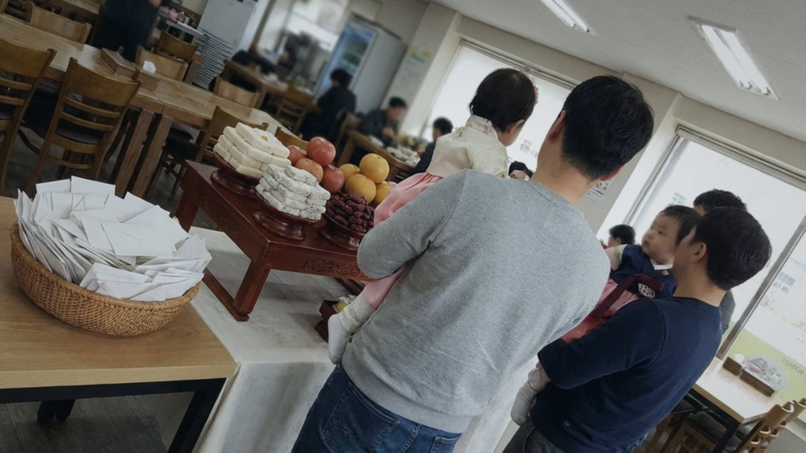
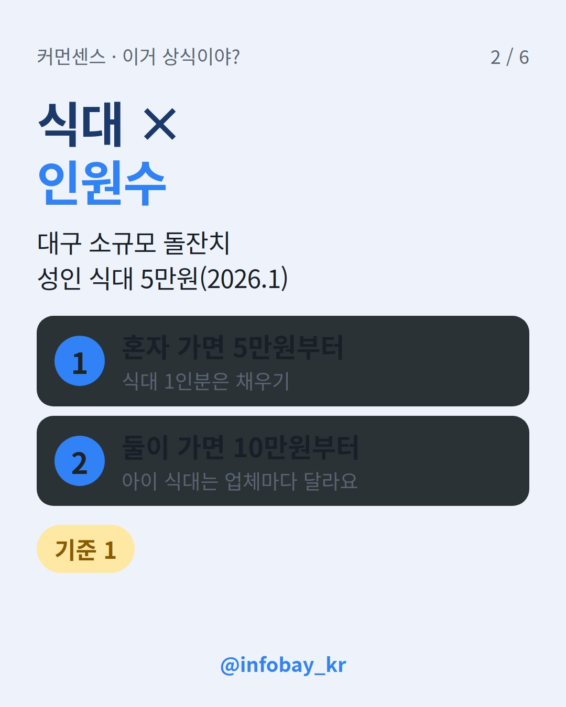
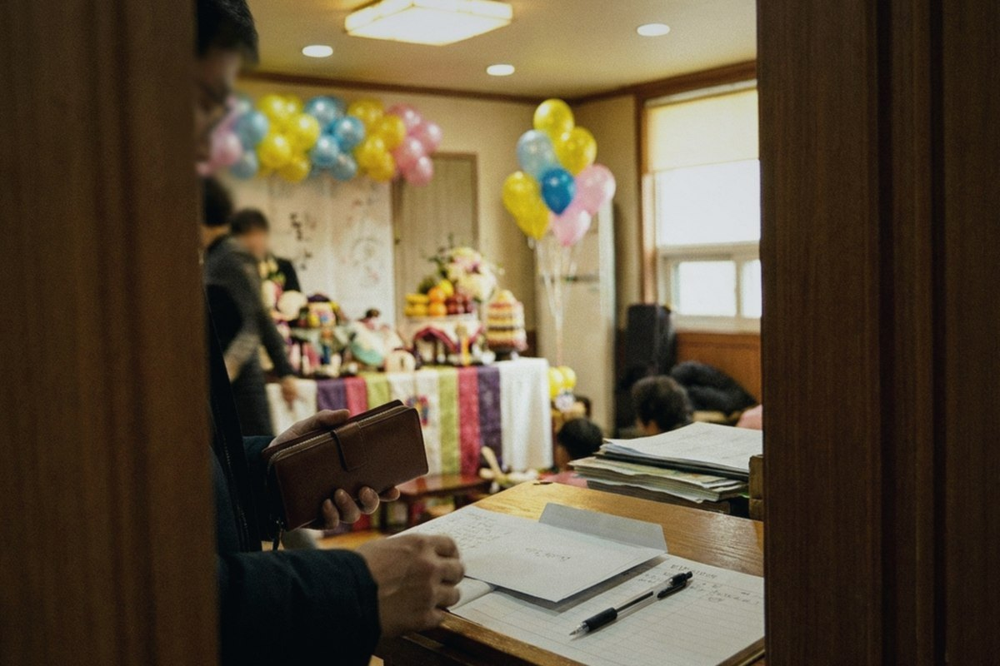

돌잔치 초대장을 받고 봉투에 얼마 넣을지 막혔다면 바로 답부터 드릴게요. 혼자 가면 5만~10만원, 가족과 함께 가면 '식대×인원'보다 적지 않게 넣는 게 가장 무난해요.
한 줄 결론 돌잔치 축의금은 정해진 공식 기준이 없어요. 성인 식대 5만원 안팎에 데려가는 인원을 곱하고, 가까운 사이면 한 단계 올리세요. 안 가면 3만~5만원이나 축하 연락만으로도 충분한 경우가 많아요.

돌잔치 축의금은 정부나 단체가 정한 기준 없이 관례로 정해지는 금액이에요. 결혼식 축의금은 해마다 설문이 나오는데, 돌잔치 금액만 따로 물은 최근 공식 설문은 2026년 11월 기준으로 찾지 못했어요.
부담감 조사는 있어요. 잡코리아가 2015년 직장인 1,640명에게 부담스러운 경조사를 물었더니(복수응답) 결혼식 67.7%, 장례식 34.7%, 돌잔치 32.9% 순이었어요. 그래서 이 글은 출처 없는 '평균' 대신 식대, 인원, 관계 세 가지로 기준을 잡았어요.
5만원 봉투가 모자라 보이는 가장 흔한 이유는 함께 간 사람들 식대를 계산하지 않아서예요. 2026년 1월 경북일보 보도를 보면 대구의 한 소규모 돌잔치 공간은 성인 식대를 5만원으로 안내했고, 다른 식당은 코스 1인 5만3천~6만3천원이었어요.
부부가 같이 가면 식대만 10만원을 넘는다는 뜻이에요. 아이 식대는 업체마다 다른데, 성인의 절반쯤 받는 곳이 많아요. 세 식구가 먹고 5만원을 내면 주최 쪽에서는 식대도 못 건지는 셈이에요.
| 데려가는 인원 | 식대 어림(성인 5만원 기준) | 무난한 시작 금액 |
|---|---|---|
| 나 혼자 | 5만원 | 5만~10만원 |
| 성인 2명 | 10만원 | 10만원 이상 |
| 성인 2명+아이 1명 | 12만~13만원 | 15만원 안팎 |
| 성인 2명+아이 2명 | 15만원 안팎 | 15만~20만원 |
아이 식대를 성인의 절반으로 잡은 어림값이에요. 호텔이나 서울 뷔페라면 식대가 더 높을 수 있으니 초대장에 적힌 장소를 먼저 확인하세요.

관계별 금액은 결혼식 축의금과 비슷하거나 한 단계 낮게 잡는 경우가 많아요. 아래 표는 통계가 아니에요. 식대와 흔히 쓰는 금액 범위를 묶어서 이 글이 정한 판단 기준이에요.
| 관계 | 안 갈 때 | 혼자 갈 때 | 가족과 갈 때 |
|---|---|---|---|
| 직장 동료·건너 아는 지인 | 3만~5만원 또는 연락만 | 5만~10만원 | 식대×인원 이상 |
| 친한 친구·자주 보는 동료 | 5만원 | 10만원 | 15만~20만원 |
| 사촌 등 친척 | 5만~10만원 | 10만원 | 20만원 안팎 |
| 형제자매 | 집안 관례 따름 | 20만원 이상 | 집안 관례 따름 |
내 결혼식 때 그 사람이 낸 금액을 알고 있다면 그 숫자부터 떠올리세요. 경조사비는 주고받는 성격이 강해서 그 금액이 표보다 먼저예요. 결혼식 금액 기준은 축의금 얼마? 평균 11만7천원인데 제일 많이 낸 금액은 5만원에 따로 정리해 뒀어요.
돼요. 요즘은 돌반지보다 현금 봉투를 더 많이 해요. 2026년 10월 10일 한국경제 보도에 따르면 한 금 거래소의 순금 돌반지 가격이 한 돈(3.75g) 84만1천원, 반 돈(1.875g) 42만2천원이었어요.
반 돈만 사도 40만원이 넘어서 가족이 아니면 선뜻 사 가기 어려워요. 2025년 12월 종로 금은방 취재에서는 돌반지 대신 1g짜리 기념품을 고르는 사람도 있다는 말이 나왔어요. 국민일보 보도에도 금반지 대신 현금 20만~30만원이나 아기 옷을 준비했다는 사례가 나와요.
금값은 매일 바뀌어요. 그래도 반지를 하고 싶다면 사는 날 시세와 세공비를 따로 확인하세요.

초대장에 계좌번호가 없고 아주 가까운 사이도 아니라면 축하 연락만 보내도 큰 실례는 아니에요. 2017년 한국일보 보도에서 한 업계 관계자는 돌잔치 초대장에 계좌번호를 넣어 달라는 요청이 5명 중 1명꼴이라고 했어요. 결혼식의 절반 수준이에요.
계좌번호가 적혀 있다면 3만~5만원에 축하 메시지 한 줄을 같이 보내는 정도가 무난해요. 초대장 계좌번호를 두고는 돈을 내라는 압박으로 보는 사람도 있고, 못 오는 사람을 위한 배려로 보는 사람도 있어요.
이 기준이 안 맞는 경우도 있어요. 지역이나 집안마다 관례 차이가 커서, 친척 돌잔치라면 부모님께 집안에서 하던 금액을 먼저 물어보는 게 안전해요.
Q. 돌잡이 때 돈을 따로 더 내야 하나요?
꼭 내야 하는 건 아니에요. 가까운 사이면 돌잡이 때 조금 더 얹는 사람도 있는데, 이건 선택이에요.
Q. 금액은 홀수로 맞춰야 하나요?
3만·5만·7만원처럼 홀수로 맞추는 관례가 있어요. 10만원은 예외로 흔히 써요.
Q. 결혼식 때 축의금을 냈는데 돌잔치에도 또 내야 하나요?
초대받아 가서 식사를 한다면 식대만큼은 내는 게 무난해요. 안 간다면 관계를 보고 정하면 돼요.
봉투를 채우기 전에 데려갈 인원부터 세어 보세요. 경조사마다 금액 기준이 왜 다른지 궁금하면 조의금 5만원 vs 10만원? 설문 1위와 성균관 권고가 다른 이유로 이어서 보면 돼요.
이 상황, 당신은? 세 식구가 돌잔치에 가서 5만원 봉투를 낸다면? 커먼센스에서 '인정/아닌데'로 투표하고 세대별 결과를 확인해 보세요.
2026년 11월 기준, 언론 보도와 업체 공개 자료 확인.